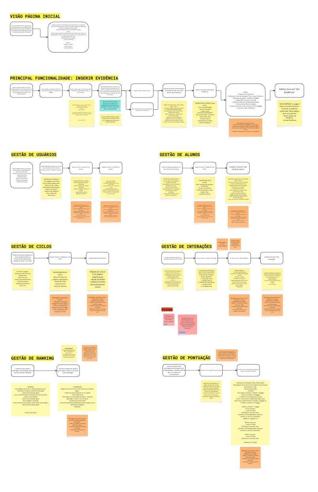
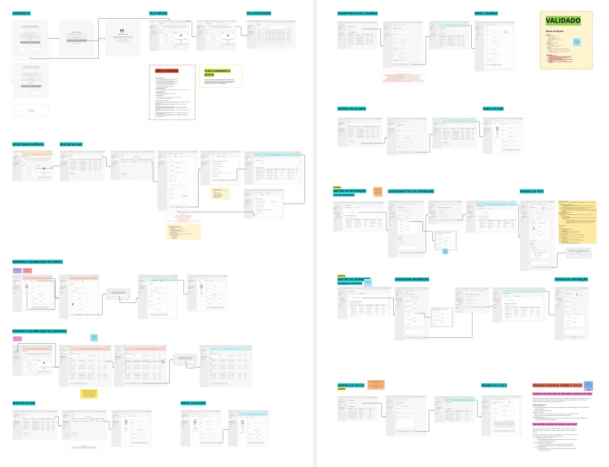
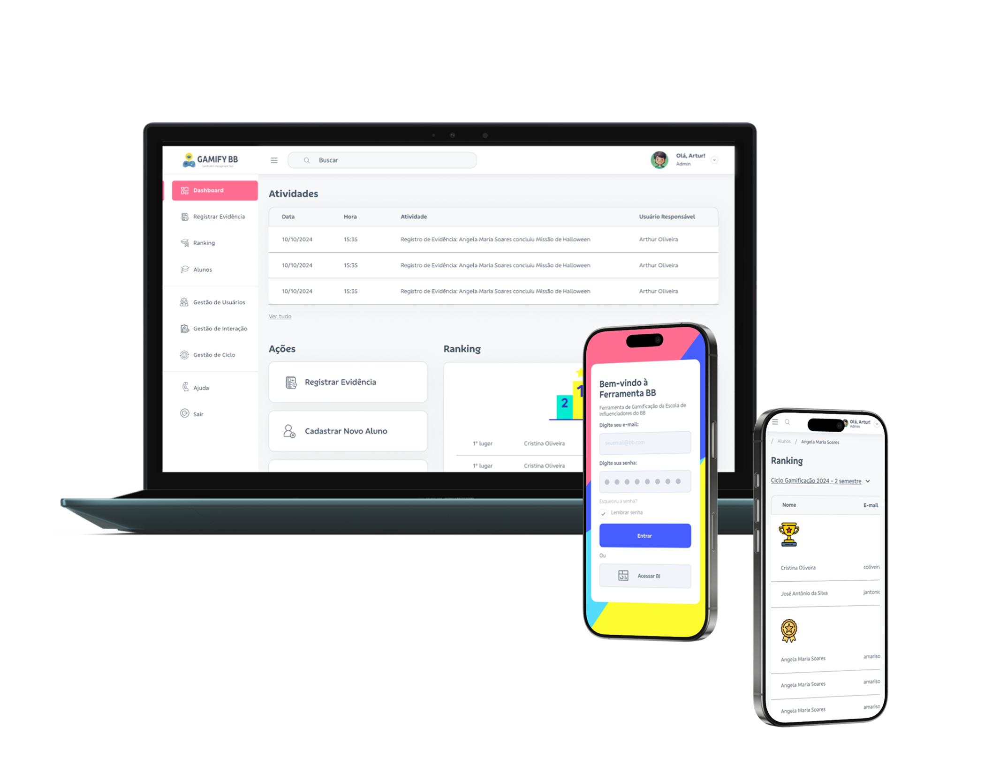

Influencer
School.
Gamification Platform Plataforma de Gamificação
Turning a manual program into a gamified experience Transformando um programa manual em uma experiência gamificada
Banco do Brasil's Influencer School already existed as a course platform designed to train employees into brand ambassadors on social media. The program had strategic value and a growing community — but behind the scenes, managers were running everything manually through spreadsheets, emails, and disconnected tools.
A Escola de Influenciadores do Banco do Brasil já existia como uma plataforma de cursos para treinar funcionários como embaixadores da marca nas redes sociais. O programa tinha valor estratégico e uma comunidade crescente — mas nos bastidores, os gestores faziam tudo manualmente através de planilhas, e-mails e ferramentas desconectadas.
There was no gamification layer, no structured way to track participation, and no visibility into what was actually driving engagement. The administrative burden was unsustainable — managers spent more time operating the program than improving it.
Não havia camada de gamificação, nenhuma forma estruturada de rastrear participação, e nenhuma visibilidade sobre o que realmente impulsionava o engajamento. A carga administrativa era insustentável — os gestores gastavam mais tempo operando o programa do que melhorando-o.
This project is the platform behind the course platform — a gamification and administration layer that gives managers structured tools to run the program at scale, while making the learning experience more engaging for participants.
Este projeto é a plataforma por trás da plataforma de cursos — uma camada de gamificação e administração que dá aos gestores ferramentas estruturadas para operar o programa em escala, enquanto torna a experiência de aprendizado mais envolvente para os participantes.
Design the gamification platform behind the existing course platform — replacing spreadsheet-driven management with a structured ecosystem of missions, rankings, evidence tracking, and rewards that managers could operate at scale.
Projetar a plataforma de gamificação por trás da plataforma de cursos existente — substituindo a gestão por planilhas por um ecossistema estruturado de missões, rankings, rastreamento de evidências e recompensas que os gestores pudessem operar em escala.
The challenge went far beyond interface design. I needed to understand the full ecosystem: how students interacted with missions, how managers tracked progress, how evidence was submitted and validated, and how rankings could be fair across different student profiles.
O desafio ia muito além do design de interface. Eu precisava entender o ecossistema completo: como os alunos interagiam com as missões, como os gestores acompanhavam o progresso, como as evidências eram submetidas e validadas, e como os rankings poderiam ser justos entre diferentes perfis de alunos.
Two interconnected platforms needed to be designed: a student-facing gamification experience that drives engagement, and an admin panel that gives managers full control without the spreadsheet chaos. Both had to work together seamlessly.
Duas plataformas interconectadas precisavam ser desenhadas: uma experiência gamificada para os alunos que impulsionasse o engajamento, e um painel administrativo que desse aos gestores controle total sem o caos das planilhas. Ambas precisavam funcionar juntas de forma integrada.
Agile methodology, deep thinking Metodologia ágil, pensamento profundo
I worked with an agile methodology, but every sprint was grounded in deep understanding — not assumptions. Research on gamification models and AI tools guided each design decision.
Trabalhei com metodologia ágil, mas cada sprint era fundamentado em entendimento profundo — não em suposições. Pesquisa sobre modelos de gamificação e ferramentas de IA guiou cada decisão de design.
Started by understanding how the program actually worked in practice. Mapped the full operational flow, identified bottlenecks, and aligned on what success looked like for both students and managers.
Comecei entendendo como o programa realmente funcionava na prática. Mapeei o fluxo operacional completo, identifiquei gargalos e alinhei o que sucesso significava tanto para alunos quanto para gestores.
Researched gamification frameworks, benchmark analysis of similar programs, and explored how AI tools could help guide mechanics for personalized missions and ranking systems.
Pesquisei frameworks de gamificação, análise de benchmark de programas similares, e explorei como ferramentas de IA poderiam ajudar a guiar mecânicas para missões personalizadas e sistemas de ranking.
Built prototypes that simulated the complete student journey — from registration to evidence upload and real-time rankings — plus the full admin panel with user, student, cycle, and interaction management.
Construí protótipos que simulavam toda a jornada do aluno — do cadastro ao upload de evidências e rankings em tempo real — além do painel administrativo completo com gestão de usuários, alunos, ciclos e interações.
Validated the design with the stakeholders who administered the Influencer School — people in direct contact with end users. Their operational knowledge shaped the final flows and information architecture.
Validei o design com os stakeholders que administravam a Escola de Influenciadores — pessoas em contato direto com os usuários finais. O conhecimento operacional deles moldou os fluxos finais e a arquitetura de informação.
Two platforms, one ecosystem Duas plataformas, um ecossistema
The solution required designing two interconnected platforms that serve different users but share the same data, the same logic, and the same goal: making the Influencer School work at scale.
A solução exigiu o design de duas plataformas interconectadas que servem usuários diferentes, mas compartilham os mesmos dados, a mesma lógica e o mesmo objetivo: fazer a Escola de Influenciadores funcionar em escala.
A mobile-first platform where students discover missions, submit evidence, track their progress, and compete in real-time rankings.
Uma plataforma mobile-first onde os alunos descobrem missões, submetem evidências, acompanham seu progresso e competem em rankings em tempo real.
- Home dashboard with progress and active missions
- Dashboard com progresso e missões ativas
- Personalized mission feed based on student profile
- Feed de missões personalizadas por perfil do aluno
- Evidence submission with photo/video upload
- Submissão de evidências com upload de foto/vídeo
- Real-time rankings and leaderboards
- Rankings e leaderboards em tempo real
- Achievement system and rewards
- Sistema de conquistas e recompensas
A comprehensive management dashboard that replaces spreadsheets with structured tools for every aspect of the program.
Um dashboard de gestão abrangente que substitui planilhas por ferramentas estruturadas para cada aspecto do programa.
- User management with roles and permissions
- Gestão de usuários com papéis e permissões
- Student management and profile tracking
- Gestão de alunos e acompanhamento de perfis
- Cycle management for program periods
- Gestão de ciclos para períodos do programa
- Interaction types and scoring configuration
- Tipos de interação e configuração de pontuação
- Ranking calibration and evidence review
- Calibragem de ranking e revisão de evidências
The mechanics that drive engagement As mecânicas que impulsionam o engajamento
Every gamification mechanic was designed with purpose — not just to make the platform feel like a game, but to create real behavioral change in how students approach learning and content creation.
Cada mecânica de gamificação foi projetada com propósito — não apenas para fazer a plataforma parecer um jogo, mas para criar mudança comportamental real em como os alunos abordam aprendizado e criação de conteúdo.
210+ missions designed and tailored per student profile, tied to real-world influencer activities. Each mission has clear objectives, deadlines, and point values that reflect effort and impact.
210+ missões desenhadas e personalizadas por perfil de aluno, ligadas a atividades reais de influenciadores. Cada missão tem objetivos claros, prazos e valores de pontos que refletem esforço e impacto.
A verification system where students upload photo or video proof of completed activities. Evidence is reviewed and validated, turning real actions into verifiable progress — not just self-reported checkboxes.
Um sistema de verificação onde os alunos fazem upload de fotos ou vídeos como prova das atividades concluídas. As evidências são revisadas e validadas, transformando ações reais em progresso verificável — não apenas checkboxes de autopreenchimento.
Dynamic leaderboards with calibration tools to ensure fairness across different student profiles and experience levels. Rankings update in real time, creating healthy competition and visibility into performance.
Leaderboards dinâmicos com ferramentas de calibragem para garantir justiça entre diferentes perfis de alunos e níveis de experiência. Rankings atualizam em tempo real, criando competição saudável e visibilidade de desempenho.
An achievement system that balances competition with learning. Rewards are earned through consistent participation, quality of evidence, and mission completion — not just speed or volume.
Um sistema de conquistas que equilibra competição com aprendizado. Recompensas são ganhas através de participação consistente, qualidade das evidências e conclusão de missões — não apenas velocidade ou volume.
Validated with stakeholders, refined with operational insight Validado com stakeholders, refinado com visão operacional
The prototypes were validated with the stakeholders who administered the Influencer School — people in direct contact with end users daily. Their deep operational knowledge of the program's pain points and user behaviors made them the ideal validators for the gamification platform.
Os protótipos foram validados com os stakeholders que administravam a Escola de Influenciadores — pessoas em contato direto com os usuários finais diariamente. O conhecimento operacional profundo deles sobre as dores do programa e comportamentos dos usuários os tornou os validadores ideais para a plataforma de gamificação.
Stakeholders walked through the full admin panel — user management, student management, cycle configuration, interaction types, and ranking calibration — validating that the platform replaced their manual spreadsheet processes effectively.
Os stakeholders percorreram todo o painel administrativo — gestão de usuários, gestão de alunos, configuração de ciclos, tipos de interação e calibragem de rankings — validando que a plataforma substituía efetivamente seus processos manuais em planilhas.
The core interaction — registering and validating evidence — was the most complex flow. Stakeholders validated the process from the manager's perspective, ensuring it was faster and more reliable than the manual approach they used before.
A interação principal — registrar e validar evidências — era o fluxo mais complexo. Os stakeholders validaram o processo pela perspectiva do gestor, garantindo que fosse mais rápido e confiável que a abordagem manual que usavam antes.
Ranking logic, scoring rules, and reward mechanics were reviewed with stakeholders who understood student behavior firsthand. Their feedback ensured the gamification model aligned with real program dynamics, not theoretical assumptions.
Lógica de ranking, regras de pontuação e mecânicas de recompensa foram revisadas com stakeholders que conheciam o comportamento dos alunos em primeira mão. O feedback deles garantiu que o modelo de gamificação se alinhasse com a dinâmica real do programa, não com suposições teóricas.
The overall navigation, hierarchy, and data organization were validated with stakeholders who would use the platform daily. This shaped the final sidebar structure, dashboard priorities, and the relationship between admin modules.
A navegação geral, hierarquia e organização de dados foram validadas com stakeholders que usariam a plataforma diariamente. Isso moldou a estrutura final da sidebar, prioridades do dashboard e a relação entre os módulos administrativos.
From research to validated artifacts Da pesquisa aos artefatos validados
Every deliverable was built with purpose — mapping the full operational flow, prototyping at low and high fidelity, and validating with stakeholders before moving forward. These are the core artifacts that shaped the final product.
Cada entregável foi construído com propósito — mapeando o fluxo operacional completo, prototipando em baixa e alta fidelidade, e validando com stakeholders antes de avançar. Estes são os artefatos centrais que moldaram o produto final.

Complete mapping of all admin platform flows — Home, Evidence Registration, User Management, Student Management, Cycle Management, Interaction Management, Ranking, and Scoring. Each module mapped with its full task hierarchy.
Mapeamento completo de todos os fluxos da plataforma administrativa — Página Inicial, Registro de Evidências, Gestão de Usuários, Gestão de Alunos, Gestão de Ciclos, Gestão de Interações, Ranking e Pontuação. Cada módulo mapeado com sua hierarquia completa de tarefas.

All admin screens wireframed with flow connections and annotations — Login, Dashboard, Evidence Registration, Ranking Calibration, Student Search, Student Profile, User Registration, User Profile, Student Management, Interaction Management, and Cycle Management. Validated and signed off by stakeholders.
Todas as telas administrativas wireframadas com conexões de fluxo e anotações — Login, Dashboard, Registro de Evidência, Calibragem de Ranking, Busca de Aluno, Perfil de Aluno, Cadastro de Usuário, Perfil de Usuário, Gestão de Alunos, Gestão de Interação e Gestão de Ciclos. Validados e aprovados pelos stakeholders.
High-fidelity interactive prototype walkthrough showing the complete admin platform navigation — the GAMIFY BB dashboard with all modules functioning as an integrated ecosystem.
Walkthrough do protótipo interativo de alta fidelidade mostrando a navegação completa da plataforma administrativa — o dashboard GAMIFY BB com todos os módulos funcionando como um ecossistema integrado.

Final high-fidelity product mockup showing the GAMIFY BB admin dashboard on desktop with sidebar navigation (Dashboard, Evidence Registration, Ranking, Students, User Management), plus mobile login and ranking screens.
Mockup final de alta fidelidade do produto mostrando o dashboard administrativo GAMIFY BB no desktop com navegação lateral (Dashboard, Registro de Evidência, Ranking, Alunos, Gestão de Usuários), mais telas mobile de login e ranking.
From spreadsheets to a scalable platform De planilhas para uma plataforma escalável
The result was a complete gamification strategy and stakeholder-validated prototypes for a platform that structures evidence submission, implements gamification mechanics for different student profiles, and provides administrative dashboards that replace manual spreadsheet operations.
O resultado foi uma estratégia de gamificação completa e protótipos validados com stakeholders para uma plataforma que estrutura a submissão de evidências, implementa mecânicas de gamificação para diferentes perfis de alunos e fornece dashboards administrativos que substituem operações manuais em planilhas.
"Designing the gamification layer behind an existing course platform — from deep alignment with BB managers, through gamification model research, to high-fidelity prototypes validated with the stakeholders who ran the program daily." "Desenhando a camada de gamificação por trás de uma plataforma de cursos existente — do alinhamento profundo com gestores do BB, passando pela pesquisa de modelos de gamificação, até protótipos de alta fidelidade validados com os stakeholders que operavam o programa diariamente."